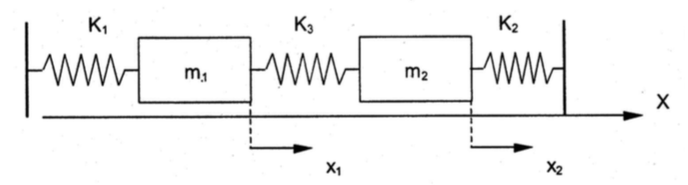
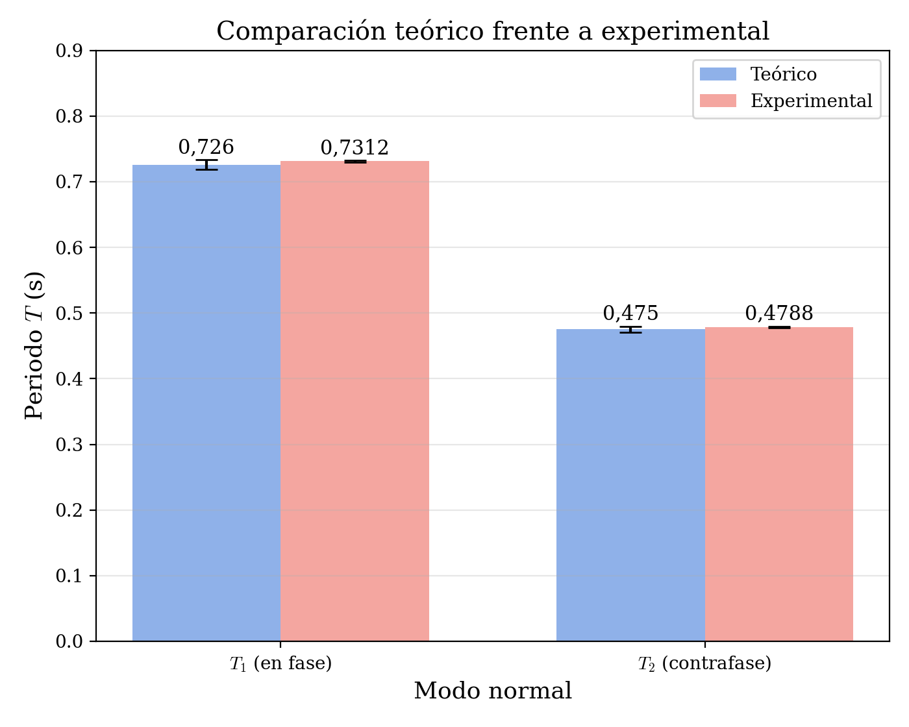

Laboratorio de Mecánica — UNED
2026-03-20
Estudio de las vibraciones libres de un sistema de dos grados de libertad: dos masas acopladas mediante tres resortes sobre un carril de aire. Determinación experimental de las frecuencias propias (modos normales) y comparación con las predicciones teóricas.
El sistema más general de vibraciones libres sin amortiguamiento con dos grados de libertad es el esquematizado en la siguiente figura. Consta de dos masas m_{1} y m_{2} sujetas a dos puntos fijos mediante dos resortes de constantes elásticas k_{1} y k_{2}, respectivamente, y unidas entre sí por un resorte acoplado de constante k_{3}.

Cada una de las masas está sometida a dos fuerzas diferentes: la fuerza principal de su resorte y la debida al resorte acoplado. La fuerza principal en m_{1} viene dada por -k_{1}\cdot x_{1}, en la dirección de x_{1}, y la del resorte acoplado será -k_{3}\cdot (x_{1} - x_{2}), en la misma dirección. Con esto podemos escribir la ecuación del movimiento para la masa m_{1}:
m_{1}\,\ddot{x}_{1} = -k_{1}\,x_{1} - k_{3}\,(x_{1} - x_{2}) \tag{1}
Análogamente, para m_{2}:
m_{2}\,\ddot{x}_{2} = -k_{2}\,x_{2} - k_{3}\,(x_{2} - x_{1}) \tag{2}
Reordenando, las ecuaciones diferenciales que definen el sistema completo son:
m_{1}\,\ddot{x}_{1} + (k_{1} + k_{3})\,x_{1} - k_{3}\,x_{2} = 0 \tag{3}
m_{2}\,\ddot{x}_{2} + (k_{2} + k_{3})\,x_{2} - k_{3}\,x_{1} = 0 \tag{4}
Para resolver este sistema se proponen soluciones en las que ambas masas oscilan con la misma frecuencia pero con distintas amplitudes:
x_{1} = A_{1}\,\cos(\omega t + \alpha) \hspace{2cm} x_{2} = A_{2}\,\cos(\omega t + \alpha) \tag{5}
Sustituyendo en las ecuaciones (3) y (4), y simplificando el factor \cos(\omega t + \alpha) (válido para todo t), se obtiene el sistema algebraico homogéneo:
(k_{1} + k_{3} - m_{1}\,\omega^{2})\,A_{1} - k_{3}\,A_{2} = 0 \tag{6}
-k_{3}\,A_{1} + (k_{2} + k_{3} - m_{2}\,\omega^{2})\,A_{2} = 0 \tag{7}
Este sistema homogéneo en A_{1} y A_{2} solo tiene solución no trivial si el determinante de los coeficientes es nulo:
\boxed{\begin{vmatrix} k_{1} + k_{3} - m_{1}\,\omega^{2} & -k_{3} \\ -k_{3} & k_{2} + k_{3} - m_{2}\,\omega^{2} \end{vmatrix} = 0} \tag{8}
Desarrollando el determinante:
(k_{1} + k_{3} - m_{1}\,\omega^{2})\,(k_{2} + k_{3} - m_{2}\,\omega^{2}) - k_{3}^{2} = 0 \tag{9}
En el caso de una cadena simétrica, la ecuación (9) se convierte en:
m^{2}\,\omega^{4} - 2\,(k + k')\,m\,\omega^{2} + \left[(k + k')^{2} - k'^{2}\right] = 0 \tag{10}
que es una ecuación bicuadrada en \omega. Sus soluciones son las dos frecuencias naturales del sistema:
\boxed{\omega_{1} = \sqrt{\dfrac{k}{m}}} \hspace{2cm} \boxed{\omega_{2} = \sqrt{\dfrac{k + 2k'}{m}}} \tag{11}
y los periodos correspondientes:
\boxed{T_{1} = 2\pi\sqrt{\dfrac{m}{k}}} \hspace{2cm} \boxed{T_{2} = 2\pi\sqrt{\dfrac{m}{k + 2k'}}} \tag{12}
Sustituyendo cada frecuencia propia en cualquiera de las ecuaciones (6) o (7) se obtiene la relación entre las amplitudes A_{1} y A_{2}:
Modo 1 (\omega = \omega_{1}): se obtiene A_{1} = A_{2}. Ambas masas oscilan en fase (se mueven en el mismo sentido con la misma amplitud).
Modo 2 (\omega = \omega_{2}): se obtiene A_{1} = -A_{2}. Ambas masas oscilan en oposición de fase (se mueven en sentidos opuestos con la misma amplitud).
Las dos soluciones linealmente independientes son, por tanto:
x_{1}^{(1)} = A\,\cos(\omega_{1} t + \alpha_{1}) \hspace{1.5cm} x_{2}^{(1)} = A\,\cos(\omega_{1} t + \alpha_{1}) \tag{13}
x_{1}^{(2)} = B\,\cos(\omega_{2} t + \alpha_{2}) \hspace{1.5cm} x_{2}^{(2)} = -B\,\cos(\omega_{2} t + \alpha_{2}) \tag{14}
La solución general del sistema es la superposición de ambos modos:
x_{1} = A\,\cos(\omega_{1} t + \alpha_{1}) + B\,\cos(\omega_{2} t + \alpha_{2}) \tag{15}
x_{2} = A\,\cos(\omega_{1} t + \alpha_{1}) - B\,\cos(\omega_{2} t + \alpha_{2}) \tag{16}
donde A, B, \alpha_{1} y \alpha_{2} son constantes determinadas por las condiciones iniciales.
Para excitar selectivamente el modo 1 (\omega_{1} = \sqrt{k/m}) basta con desplazar ambas masas la misma distancia respecto de su posición de equilibrio y en el mismo sentido. De este modo, las condiciones iniciales imponen A_{1} = A_{2}, de manera que en las ecuaciones (15) y (16) se tiene B = 0, y el sistema oscila únicamente con la frecuencia \omega_{1}. Físicamente, el resorte central (k') no se deforma, ya que ambas masas se mueven solidariamente.
Para excitar selectivamente el modo 2 (\omega_{2} = \sqrt{(k + 2k')/m}) se desplazan ambas masas la misma distancia pero en sentidos opuestos. Así, A_{1} = -A_{2}, lo que implica A = 0 en las ecuaciones (15) y (16), y el sistema oscila únicamente con la frecuencia \omega_{2}. En este caso, el resorte central se comprime y se estira el doble de lo que se desplaza cada masa, contribuyendo con una fuerza recuperadora adicional 2k', lo que explica que \omega_{2} > \omega_{1}.
Si se desplaza solo la masa 1 una distancia A_0 y se suelta con la masa 2 en reposo en su equilibrio, las condiciones iniciales x_1(0)=A_0, x_2(0)=0, \dot x_1(0)=\dot x_2(0)=0 dan, en las ecuaciones (15) y (16), A=B=A_0/2 y \alpha_1=\alpha_2=0:
x_1(t)=A_0\cos\!\left(\frac{\omega_2-\omega_1}{2}\,t\right)\cos\!\left(\frac{\omega_1+\omega_2}{2}\,t\right),\qquad x_2(t)=A_0\sin\!\left(\frac{\omega_2-\omega_1}{2}\,t\right)\sin\!\left(\frac{\omega_1+\omega_2}{2}\,t\right). \tag{17}
Cada masa oscila con la frecuencia media \bar\omega=(\omega_1+\omega_2)/2 y una amplitud que varía lentamente: la energía pasa de una masa a la otra y vuelve. El tiempo entre dos instantes consecutivos en que la masa 1 queda en reposo es el período de pulsación
T_b=\frac{2\pi}{\omega_2-\omega_1}. \tag{18}
Las pulsaciones son claras solo si el acoplamiento es débil, k'\ll k, de modo que \omega_2-\omega_1\ll\bar\omega. Con k=15 N/m, k'=10 N/m y m=0.200 kg, T_b\approx 1.4 s y caben solo unas dos oscilaciones en cada pulsación; con un resorte central blando, k'\approx 1.5 N/m, T_b\approx 8 s y el intercambio de energía se ve muy bien.
El montaje experimental es el mismo que el descrito en la Práctica 9: un carril de aire con bomba para eliminar el rozamiento. Se colocan dos deslizadores de masas iguales sobre el carril, sujetos a los extremos fijos mediante dos resortes de constante k y acoplados entre si por un tercer resorte de constante k'. El soporte auxiliar permite acortar la distancia útil del carril para que los resortes trabajen en régimen elástico.
1
Las constantes de los tres resortes de esta práctica (dos iguales, de constante k, y el central, de constante k') se determinan con el mismo método estático de la Práctica 9 (ley de Hooke: al menos diez sobrecargas, ajuste de F frente a \Delta x). No son los resortes del ejemplo de la Práctica 9 (allí k_1=14.93 N/m y k_2=19.98 N/m): medidlos en esta sesión y pesad también cada resorte (su masa interviene en el Ejercicio posterior 2).
Valores de ejemplo, obtenidos por el método estático:
- Constante del resorte 1: k_{1} = 15.0 \pm 0.3 N/m
- Constante del resorte 2: k_{2} = 15.1 \pm 0.3 N/m
- Constante del resorte central: k_{3} = k' = 10.0 \pm 0.2 N/m
Para los cálculos teóricos se toma el valor medio k = (k_{1} + k_{2})/2 = 15.05 \approx 15.0 N/m.
2
Pesar los dos deslizadores en la balanza de precisión. Verificar que ambos tienen la misma masa (dentro de la incertidumbre de la balanza).
Una pequeña diferencia entre m_1 y m_2 (o entre k_1 y k_2) apenas cambia las frecuencias propias, pero sí la forma de los modos: en el modo «en fase» las amplitudes ya no son exactamente iguales. Con los valores del ejemplo (\Delta m/m=0.1\%, k_1 y k_2 distintos en un 0.7 %) el efecto es despreciable frente a los errores de medida. Colocad además los soportes de modo que, en equilibrio, los dos deslizadores queden a la misma distancia de sus extremos fijos.
Datos
experimentales
| Magnitud | Valor |
|---|---|
| Masa del deslizador 1, m_{1} | 200.0 \pm 0.1 g |
| Masa del deslizador 2, m_{2} | 200.2 \pm 0.1 g |
| Masa media, m | 200.1 \pm 0.1 g = 0.2001 kg |
3
Colocar los dos deslizadores y los tres resortes sobre el carril de aire según la disposición de la figura. Poner en funcionamiento el compresor.
Comprobad que los tres resortes están bien enganchados antes de desplazar las masas: si un extremo se suelta, el deslizador sale despedido. No mováis los deslizadores con el compresor apagado y no estiréis los resortes más de lo necesario.
Para excitar el modo 1 (en fase), desplazar ambas masas la misma distancia (\approx 3 cm) en el mismo sentido respecto de su posición de equilibrio y soltar simultáneamente. Ambas masas deben oscilar en fase.
Para excitar un modo puro, desplazad las dos masas con una regla apoyada contra ambos deslizadores y retirad la regla de golpe. Comprobad la pureza del modo: en un modo normal las amplitudes de las dos masas son iguales y se mantienen constantes. Si una amplitud crece mientras la otra disminuye, habéis excitado una mezcla de los dos modos (pulsaciones): repetid el lanzamiento.
Medir con el cronómetro el tiempo correspondiente a 10 oscilaciones completas (mejor 20; véase la nota sobre el tiempo de reacción en la Práctica 9). Repetir la medida 5 veces.
Datos
experimentales
Periodo teórico del modo 1:
T_{1,\textrm{teo}} = 2\pi\sqrt{\dfrac{m}{k}} = 2\pi\sqrt{\dfrac{0.2001}{15.0}} = 2\pi \times 0.1155 = 0.726 \textrm{ s}
| Medida | 10\,T_{1} (s) | T_{1} (s) |
|---|---|---|
| 1 | 7.32 | 0.732 |
| 2 | 7.28 | 0.728 |
| 3 | 7.35 | 0.735 |
| 4 | 7.30 | 0.730 |
| 5 | 7.31 | 0.731 |
4
Cálculo del periodo medio y su incertidumbre (Modo 1).
Valor medio del periodo:
\bar{T}_{1} = \dfrac{1}{5}\sum_{i=1}^{5} T_{1,i} = \dfrac{0.732 + 0.728 + 0.735 + 0.730 + 0.731}{5} = 0.7312 \textrm{ s}
Desviación típica de la muestra:
s_{T_{1}} = \sqrt{\dfrac{1}{N-1}\sum_{i=1}^{N}\left(T_{1,i} - \bar{T}_{1}\right)^{2}}
s_{T_{1}} = \sqrt{\dfrac{(0.0008)^{2} + (-0.0032)^{2} + (0.0038)^{2} + (-0.0012)^{2} + (-0.0002)^{2}}{4}}
s_{T_{1}} = \sqrt{\dfrac{0.64 + 10.24 + 14.44 + 1.44 + 0.04}{4} \times 10^{-6}} = \sqrt{6.70 \times 10^{-6}} = 0.0026 \textrm{ s}
Incertidumbre del valor medio. Siguiendo el Manual para N=5\le 10 medidas, el error de cada medida es \epsilon=\max(e_p,D_m): e_p=0.001 s (0.01 s del cronómetro repartidos entre 10 períodos; véase la nota sobre el tiempo de reacción en la Práctica 9) y D_m=(T_{\max}-T_{\min})/2=(0.735-0.728)/2=0.0035 s, de modo que \epsilon=0.0035 s (mayor que la desviación típica calculada arriba, que se da solo como comparación) y
\Delta \bar{T}_{1} = \dfrac{\epsilon}{\sqrt{N}} = \dfrac{0.0035}{\sqrt{5}} = 0.0016 \textrm{ s}
\boxed{T_{1,\textrm{exp}} = (0.7312 \pm 0.0016) \textrm{ s}}
Frecuencia angular experimental del modo 1:
\omega_{1,\textrm{exp}} = \dfrac{2\pi}{T_{1,\textrm{exp}}} = \dfrac{2\pi}{0.7312} = 8.593 \textrm{ rad/s}
Comparación con el valor teórico:
T_{1,\textrm{teo}} = 2\pi\sqrt{\dfrac{m}{k}} = 2\pi\sqrt{\dfrac{0.2001}{15.0}} = 0.726 \textrm{ s}
\omega_{1,\textrm{teo}} = \sqrt{\dfrac{k}{m}} = \sqrt{\dfrac{15.0}{0.2001}} = 8.660 \textrm{ rad/s}
Discrepancia porcentual:
\varepsilon_{T_{1}} = \dfrac{|T_{1,\textrm{exp}} - T_{1,\textrm{teo}}|}{T_{1,\textrm{teo}}} \times 100 = \dfrac{|0.7312 - 0.726|}{0.726} \times 100 = 0.7\,\text{\%}
\boxed{\varepsilon_{T_{1}} = 0.7\,\text{\%}}
5
Para excitar el modo 2 (oposición de fase), desplazar ambas masas la misma distancia (\approx 3 cm) pero en sentidos opuestos respecto de su posición de equilibrio y soltar simultáneamente: sujetad los dos deslizadores con las dos manos de una misma persona y soltadlos a la vez. Las masas deben oscilar en contrafase, con amplitudes iguales y constantes.
Medir con el cronómetro el tiempo correspondiente a 10 oscilaciones completas. Repetir la medida 5 veces.
Datos
experimentales
Periodo teórico del modo 2:
T_{2,\textrm{teo}} = 2\pi\sqrt{\dfrac{m}{k + 2k'}} = 2\pi\sqrt{\dfrac{0.2001}{15.0 + 20.0}} = 2\pi\sqrt{\dfrac{0.2001}{35.0}} = 0.475 \textrm{ s}
| Medida | 10\,T_{2} (s) | T_{2} (s) |
|---|---|---|
| 1 | 4.78 | 0.478 |
| 2 | 4.81 | 0.481 |
| 3 | 4.76 | 0.476 |
| 4 | 4.79 | 0.479 |
| 5 | 4.80 | 0.480 |
6
Cálculo del periodo medio y su incertidumbre (Modo 2).
Valor medio del periodo:
\bar{T}_{2} = \dfrac{1}{5}\sum_{i=1}^{5} T_{2,i} = \dfrac{0.478 + 0.481 + 0.476 + 0.479 + 0.480}{5} = 0.4788 \textrm{ s}
Desviación típica de la muestra:
s_{T_{2}} = \sqrt{\dfrac{1}{N-1}\sum_{i=1}^{N}\left(T_{2,i} - \bar{T}_{2}\right)^{2}}
s_{T_{2}} = \sqrt{\dfrac{(-0.0008)^{2} + (0.0022)^{2} + (-0.0028)^{2} + (0.0002)^{2} + (0.0012)^{2}}{4}}
s_{T_{2}} = \sqrt{\dfrac{0.64 + 4.84 + 7.84 + 0.04 + 1.44}{4} \times 10^{-6}} = \sqrt{3.70 \times 10^{-6}} = 0.0019 \textrm{ s}
Incertidumbre del valor medio. Análogamente, D_m=(0.481-0.476)/2=0.0025 s >e_p=0.001 s, de modo que
\Delta \bar{T}_{2} = \dfrac{\epsilon}{\sqrt{N}} = \dfrac{0.0025}{\sqrt{5}} = 0.0011 \textrm{ s}
\boxed{T_{2,\textrm{exp}} = (0.4788 \pm 0.0011) \textrm{ s}}
Frecuencia angular experimental del modo 2:
\omega_{2,\textrm{exp}} = \dfrac{2\pi}{T_{2,\textrm{exp}}} = \dfrac{2\pi}{0.4788} = 13.12 \textrm{ rad/s}
Comparación con el valor teórico:
T_{2,\textrm{teo}} = 2\pi\sqrt{\dfrac{m}{k + 2k'}} = 0.475 \textrm{ s}
\omega_{2,\textrm{teo}} = \sqrt{\dfrac{k + 2k'}{m}} = \sqrt{\dfrac{35.0}{0.2001}} = 13.22 \textrm{ rad/s}
Discrepancia porcentual:
\varepsilon_{T_{2}} = \dfrac{|T_{2,\textrm{exp}} - T_{2,\textrm{teo}}|}{T_{2,\textrm{teo}}} \times 100 = \dfrac{|0.4788 - 0.475|}{0.475} \times 100 = 0.8\,\text{\%}
\boxed{\varepsilon_{T_{2}} = 0.8\,\text{\%}}
7
Pulsaciones. Con las masas en equilibrio, desplazad solo la masa 1 unos 3 cm y soltadla. Observad cómo la amplitud de la masa 1 disminuye mientras crece la de la masa 2, y al revés (ecuación 17). Medid con el cronómetro el tiempo de 5 pulsaciones (de un instante en que la masa 1 está quieta al quinto siguiente) y repetid 5 veces. Comparad T_b=t_5/5 con 2\pi/(\omega_{2,\textrm{exp}}-\omega_{1,\textrm{exp}}) obtenido de los pasos 4 y 6 (ecuación 18). Si disponéis de un resorte central mucho más blando que los laterales (o de una goma fina), repetid con él: las pulsaciones serán lentas y muy nítidas.
8
Ampliación (como en la versión de 2016). Repetid las medidas de los dos modos añadiendo a cada deslizador la misma masa: 50, 100 y 150 g (por parejas, una a cada lado). Representad T_1^{2} y T_2^{2} frente a la masa de cada deslizador: según (Ecuación 12) son rectas de pendientes 4\pi^{2}/k y 4\pi^{2}/(k+2k'). De ellas obtened k y k' y comparad con los valores estáticos. Las ordenadas en el origen dan m_{\textrm{ef},1}-m y m_{\textrm{ef},2}-m (Ejercicio posterior 2).
9
Propagación de errores en los periodos teóricos.
Usamos, como en el resto de las prácticas, la propagación lineal del Manual (Tema 3). Para un monomio T=2\pi\,m^{1/2}K^{-1/2}:
\frac{\Delta T}{T}=\frac12\frac{\Delta m}{m}+\frac12\frac{\Delta K}{K}.
El periodo teórico del modo 1 es T_{1} = 2\pi\sqrt{m/k} (K=k). Sustituyendo valores (\Delta m = 0.0001 kg, \Delta k = 0.3 N/m):
\Delta T_{1} = 0.726 \times \left(\dfrac{0.0001}{2 \times 0.2001} + \dfrac{0.3}{2 \times 15.0}\right) = 0.726 \times (0.00025 + 0.0100) = 0.007 \textrm{ s}
\boxed{T_{1,\textrm{teo}} = (0.726 \pm 0.007) \textrm{ s}}
Análogamente para el modo 2, con T_{2} = 2\pi\sqrt{m/(k + 2k')} (K=k+2k'), donde el error de la combinación lineal es la suma de los errores, \Delta(k + 2k') = \Delta k + 2\,\Delta k' = 0.3 + 0.4 = 0.7 N/m:
\Delta T_{2} = 0.475 \times \left(\dfrac{0.0001}{2 \times 0.2001} + \dfrac{0.7}{2 \times 35.0}\right) = 0.475 \times (0.00025 + 0.0100) = 0.005 \textrm{ s}
\boxed{T_{2,\textrm{teo}} = (0.475 \pm 0.005) \textrm{ s}}
Compatibilidad. Modo 1: los intervalos (0.719;\ 0.733) s (teórico) y (0.7296;\ 0.7328) s (experimental) se solapan. Modo 2: (0.470;\ 0.480) s y (0.4777;\ 0.4799) s se solapan. Los dos resultados son compatibles con la teoría, aunque ambos periodos medidos quedan por encima del valor central teórico (Ejercicio posterior 2).
10
Resumen de resultados.

figuras.py)| Magnitud | Valor teórico | Valor experimental | Discrepancia |
|---|---|---|---|
| T_{1} (modo en fase) | (0.726 \pm 0.007) s | (0.7312 \pm 0.0016) s | 0.7\,\text{\%} |
| T_{2} (modo en contrafase) | (0.475 \pm 0.005) s | (0.4788 \pm 0.0011) s | 0.8\,\text{\%} |
| \omega_{1} | 8.66 rad/s | 8.59 rad/s | 0.8\,\text{\%} |
| \omega_{2} | 13.22 rad/s | 13.12 rad/s | 0.8\,\text{\%} |
| T_{1}/T_{2} (teórico: \sqrt{(k+2k')/k} = 1.528) | 1.528 | 1.527 \pm 0.007 | 0.1\,\text{\%} |
Conclusiones:
\boxed{T_{1,\textrm{exp}} = (0.7312 \pm 0.0016) \textrm{ s} \hspace{1cm} T_{2,\textrm{exp}} = (0.4788 \pm 0.0011) \textrm{ s}}
\boxed{\omega_{1,\textrm{exp}} = 8.59 \textrm{ rad/s} \hspace{1cm} \omega_{2,\textrm{exp}} = 13.12 \textrm{ rad/s}}
Partiendo de la condición de determinante nulo (Ecuación 8) con k_{1} = k_{2} = k, k_{3} = k' y m_{1} = m_{2} = m:
\begin{vmatrix} k + k' - m\,\omega^{2} & -k' \\ -k' & k + k' - m\,\omega^{2} \end{vmatrix} = 0
(k + k' - m\,\omega^{2})^{2} - k'^{2} = 0
Factorizando como diferencia de cuadrados:
\left[(k + k' - m\,\omega^{2}) - k'\right]\left[(k + k' - m\,\omega^{2}) + k'\right] = 0
(k - m\,\omega^{2})(k + 2k' - m\,\omega^{2}) = 0
Las dos soluciones son:
\omega_{1}^{2} = \dfrac{k}{m} \Rightarrow \boxed{\omega_{1} = \sqrt{\dfrac{k}{m}}}
\omega_{2}^{2} = \dfrac{k + 2k'}{m} \Rightarrow \boxed{\omega_{2} = \sqrt{\dfrac{k + 2k'}{m}}}
Sustituyendo \omega_{1}^{2} = k/m en la ecuación (6) (caso simétrico):
(k + k' - m \cdot k/m)\,A_{1} - k'\,A_{2} = 0
k'\,A_{1} - k'\,A_{2} = 0 \Rightarrow \boxed{A_{1} = A_{2}}
Sustituyendo \omega_{2}^{2} = (k + 2k')/m en la ecuación (6):
(k + k' - m \cdot (k + 2k')/m)\,A_{1} - k'\,A_{2} = 0
(k + k' - k - 2k')\,A_{1} - k'\,A_{2} = 0
-k'\,A_{1} - k'\,A_{2} = 0 \Rightarrow \boxed{A_{1} = -A_{2}}
T_{1} = 2\pi\sqrt{\dfrac{m}{k}} = 2\pi\sqrt{\dfrac{0.200}{15.0}} = 2\pi\sqrt{0.01333} = 2\pi \times 0.1155 = 0.726 \textrm{ s}
T_{2} = 2\pi\sqrt{\dfrac{m}{k + 2k'}} = 2\pi\sqrt{\dfrac{0.200}{35.0}} = 2\pi\sqrt{0.005714} = 2\pi \times 0.07559 = 0.475 \textrm{ s}
\boxed{T_{1} = 0.726 \textrm{ s} \hspace{1.5cm} T_{2} = 0.475 \textrm{ s}}
Se verifica que T_{2} < T_{1}, ya que el modo 2 tiene mayor frecuencia.
En el modo 1 (en fase), ambas masas se mueven en el mismo sentido y con la misma amplitud. El resorte central no se deforma, ya que la distancia entre las dos masas no cambia. Por tanto, el resorte central no contribuye a la fuerza recuperadora, y la frecuencia depende únicamente de k: \omega_{1} = \sqrt{k/m}.
En el modo 2 (en oposición de fase), las masas se mueven en sentidos opuestos. Si una masa se desplaza +x, la otra se desplaza -x, por lo que el resorte central se deforma una cantidad 2x. Esto añade una fuerza recuperadora adicional de magnitud k' \cdot 2x a cada masa. La constante elástica efectiva es k + 2k', y la frecuencia resulta \omega_{2} = \sqrt{(k + 2k')/m}.
\omega_{2} > \omega_{1} porque en el modo 2 el resorte central contribuye a la rigidez efectiva del sistema.
De la ecuación (11):
\omega_{1}^{2} = \dfrac{k}{m} \Rightarrow k = m\,\omega_{1}^{2} = 0.2001 \times (8.593)^{2} = 0.2001 \times 73.84 = 14.78 \textrm{ N/m}
\omega_{2}^{2} = \dfrac{k + 2k'}{m} \Rightarrow k + 2k' = m\,\omega_{2}^{2} = 0.2001 \times (13.12)^{2} = 0.2001 \times 172.1 = 34.4 \textrm{ N/m}
2k' = (k + 2k') - k = 34.4 - 14.8 = 19.6 \textrm{ N/m} \Rightarrow k' = 9.8 \textrm{ N/m}
Con \omega=2\pi/T y propagación lineal, k'=\tfrac12 m\left(\omega_2^{2}-\omega_1^{2}\right) y
\frac{\Delta k}{k}=\frac{\Delta m}{m}+2\frac{\Delta T_1}{T_1},\qquad \Delta k'=\frac{\Delta m}{m}\,k'+m\left(\omega_2^{2}\frac{2\Delta T_2}{T_2}+\omega_1^{2}\frac{2\Delta T_1}{T_1}\right),
de donde, con los errores de los pasos 4 y 6, k=(14.78\pm 0.07) N/m y k'=(9.8\pm 0.2) N/m.
Comparación con los valores estáticos (paso 1):
| Constante | Método estático | Método dinámico | Discrepancia |
|---|---|---|---|
| k | (15.0 \pm 0.3) N/m | (14.78 \pm 0.07) N/m | 1.5\,\text{\%} |
| k' | (10.0 \pm 0.2) N/m | (9.8 \pm 0.2) N/m | 1.6\,\text{\%} |
Los intervalos se solapan, de modo que los valores son compatibles; en el caso de k, los intervalos (14.71;\ 14.85) y (14.7;\ 15.3) N/m se solapan solo en su borde, y el valor dinámico queda por debajo del estático. ¿Lo explica la masa de los resortes (Ejercicio posterior 2)?
Los resortes no tienen masa nula. Sumando las energías cinéticas, cada modo se comporta como si cada deslizador tuviera una masa efectiva mayor que m:
m_{\textrm{ef},1}=m+\frac{m_s}{3}+\frac{m_c}{2}\quad(\text{modo en fase}),\qquad m_{\textrm{ef},2}=m+\frac{m_s}{3}+\frac{m_c}{6}\quad(\text{modo en contrafase}),
donde m_s es la masa de cada resorte lateral y m_c la del central. Cada resorte lateral tiene un extremo fijo y aporta m_s/3 en los dos modos; en el modo 1 el resorte central se traslada entero con las masas, mientras que en el modo 2 su punto medio está quieto. Por eso los dos periodos medidos son algo mayores que los calculados con m, y más el del modo 1. Pesad los resortes y comprobad si esta corrección explica las discrepancias. Otras fuentes: rozamiento residual (véase la medida del amortiguamiento en la Práctica 9), diferencia entre k_1 y k_2 y entre m_1 y m_2, no linealidad si algún resorte llega a aflojarse.
Si m_{1} \neq m_{2}, hay que resolver la ecuación bicuadrada completa (Ecuación 9):
(k_{1} + k_{3} - m_{1}\,\omega^{2})(k_{2} + k_{3} - m_{2}\,\omega^{2}) - k_{3}^{2} = 0
Las frecuencias propias siguen siendo dos valores reales y positivos, pero los modos normales ya no son puramente simétricos (A_{1} = A_{2}) ni puramente antisimétricos (A_{1} = -A_{2}). En su lugar, la relación A_{1}/A_{2} toma valores intermedios que dependen de la diferencia de masas. A medida que la asimetría aumenta, los modos se localizan: cada modo tiende a implicar predominantemente el movimiento de una sola masa.
\dfrac{\omega_{2}}{\omega_{1}} = \sqrt{\dfrac{k + 2k'}{k}} = \sqrt{1 + \dfrac{2k'}{k}}
Las dos frecuencias son iguales cuando k' = 0, es decir, cuando no hay resorte de acoplamiento. En ese caso, el sistema se reduce a dos osciladores independientes e idénticos con la misma frecuencia \omega = \sqrt{k/m}.
Con los datos experimentales:
\dfrac{\omega_{2}}{\omega_{1}} = \sqrt{1 + \dfrac{2 \times 10.0}{15.0}} = \sqrt{1 + 1.333} = \sqrt{2.333} = 1.528
\boxed{\dfrac{\omega_{2}}{\omega_{1}} = \sqrt{1 + 2k'/k} = 1.53}
Con el acelerómetro del teléfono sujeto a uno de los deslizadores (experimento Acceleration Spectrum de Phyphox, https://phyphox.org/experiment/acceleration-spectrum/) se ven en el espectro los dos picos de las frecuencias propias, incluso si los dos modos están mezclados. Precauciones: la masa del teléfono rompe la simetría m_1=m_2; poned en el otro deslizador una masa igual a la del teléfono. La resolución del espectro es \Delta f=1/t_{\textrm{reg}} (0.05 Hz con 20 s de registro): registrad al menos 30–60 s. Con dos teléfonos, uno en cada deslizador, se pueden formar x_1+x_2 y x_1-x_2, que oscilan cada una con una sola frecuencia: son las coordenadas normales (Ejercicio previo 5).
Guion de prácticas de Laboratorio de Mecánica, UNED — Práctica 4: Vibraciones libres con 2 grados de libertad.
A. P. French, Vibrations and Waves, MIT Introductory Physics Series (reimpr. CRC Press, 2017, https://doi.org/10.1201/9781315273372): cap. 2 «The superposition of periodic motions» (pulsaciones) y cap. 5 «Coupled oscillators and normal modes».
F. S. Crawford, Waves, Berkeley Physics Course, vol. 3: cap. 1 «Free Oscillations of Simple Systems» (sistemas con dos grados de libertad y pulsaciones); el cap. 2 generaliza a muchos grados de libertad.
Marion, J.B. y Thornton, S.T., Classical Dynamics of Particles and Systems, Cap. 12: Coupled oscillations.
Pain, H.J., The Physics of Vibrations and Waves, Cap. 4: Coupled oscillations.
P. Falstad, Coupled Oscillation Simulation: https://www.falstad.com/coupled/.
A. Franco, Física con ordenador (EHU), «Dos osciladores acoplados»: http://www.sc.ehu.es/sbweb/fisica/oscilaciones/acoplados/acoplados.html.
LD Didactic, Experimentos de Física (catálogo 2011), P1.5.4 «Acoplamiento de oscilaciones», pp. 40–41.
E. E. Rodríguez y G. A. Gesnouin, «Effective mass of an oscillating spring», Phys. Teach. 45, 100–103 (2007). https://doi.org/10.1119/1.2432087